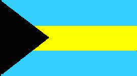
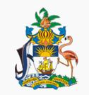

Bahamas
|  |  |
Información General
Nombre oficial: Commonwealth de las Bahamas
Área: 13 939 km²
Costas: 3 542 km
División política: 19 islas y/o grupos de islas, a los que pertenecen
- Andros (la mayor)
- Great Abaco
- Little Abaco
- Acklins Islands
- Berry Islands
- North Birmini
- Cat Islands
- Crooked Islands
- Eleuthera
- Harbour Islands
- Spanish Wells
- Great Exuma
- Little Exuma y cayos
- Grand Bahama
- Great Inagua
- Little Inagua
- Long Cay
- Long Island
- Mayaguana
- New Providence.
- Ragged Island y cayos
- Watting (San Salvador)
- Rum Cay
Unidad monetaria: Dólar de Bahamas
1 Dólar de Bahamas = 100 centavos
Idiomas: Inglés (oficial); dialecto criollo, griego y chino (no oficiales)
Fiesta nacional: 10 de julio, Día de la Independencia
Gentilicio: Bahamés
Hora oficial: GMT -5 horas (normal); GMT -4 horas (verano)
Miembro de: ONU, Commonwealth, OEA, CARICOM
Curiosidades
Las aguas de las Bahamas se pueden considerar entre las más transparentes del mundo ya que en las islas apenas hay ríos que las enturbien.
El Commonwealth de las Bahamas está formado por veintidós islas habitadas, más de 700 deshabitadas y cerca de 2 000 peñascos y escollos.
La isla de Watting o San Salvador es la primera tierra de América descubierta por Colón.
Perfil
Ecónomico
Perfil Demográfico
Población: 300.529 hab.
Densidad de población: 22 hab/km²
Perfil Cultural
Alfabetismo: 96 %
Religión:
- Protestantes: 43,0%
- Católicos: 28,0%
- Anglicanos: 17,0%
- No religiosos: 6,3%
- Protestantes marginales: 1,2%
- Otros: 4,5%
Sistema de Gobierno
Constitución vigente: 10 de julio de 1973
Sistema ejecutivo: Monarca británico (jefe de Estado representado por el gobernador general), primer ministro (jefe de Gobierno, líder del partido mayoritario nombrado por el Parlamento) y gabinete.
Sistema legislativo: Gobernador general, Senado (dieciséis miembros, nueve recomendados por el primer ministro, cuatro por el líder de la oposición y tres por el gobernador general, previa consulta con el primer ministro) y Asamblea (cuarenta y nueve miembros, elegidos por sufragio popular para un término de cinco años).
Sistema judicial: Corte Suprema, de Apelaciones y cortes de magistrados.
Aproximación histórica
El Commonwealth de Bahamas está formado por veintidós islas habitadas, más de 700 deshabitadas y cerca de 2000 peñascos y escollos. Las islas son bajas y planas de origen coralino. El punto más elevado es el Pico Cat con 122 m. La capa vegetal es poco profunda, pero muy fértil. La mayoría de las islas carecen de ríos excepto Andros. El clima subtropical, sus extensas playas y otros atractivos turísticos han convertido al país en un importante centro de veraneo, principalmente para turistas de E.U.
Cristóbal Colón desembarca en una de las islas, San Salvador en 1492, pero los españoles no se interesan en colonizar el archipiélago. Cuando los ingleses llegan, en el siglo XVI, las islas están deshabitadas. La población crece en el siglo XVII, con la llegada de los ingleses y sus esclavos provenientes de E.U., después de la independencia norteamericana. La población renace con el cultivo del algodón, pero recae en 1834, con la abolición de la esclavitud. El contrabando durante la Ley Seca de E.U. produce un período fructífero de 1920 a 1933. Con el desarrollo del turismo después de la Segunda Guerra Mundial, las Bahamas adquieren una economía más estable.
Las Bahamas se convierten en un Estado asociado a la Comunidad Británica (Commonwealth) en 1973.
«-- ir al comienzo
«-- regresar